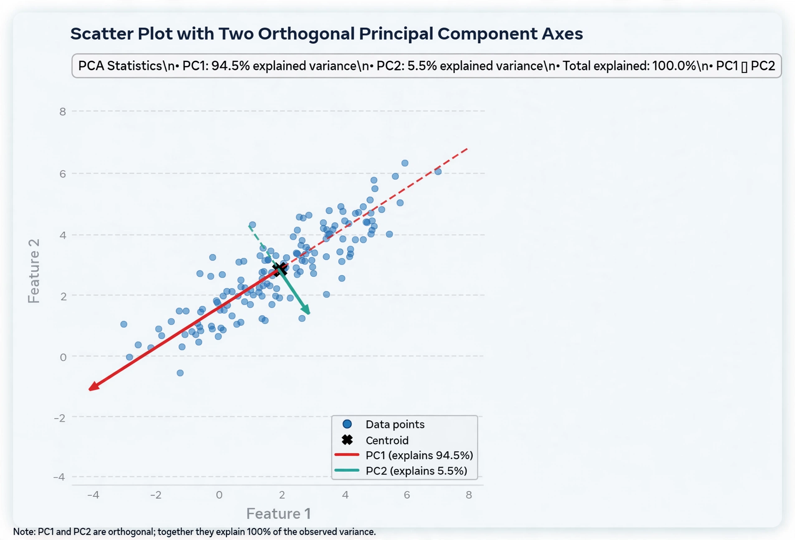

Principal component analysis (PCA) is a linear dimensionality reduction technique that transforms a set of possibly correlated variables into a set of values of linearly uncorrelated variables called principal components. This transformation is defined in such a way that the first principal component has the largest possible variance (that is, accounts for as much of the variability in the data as possible), and each succeeding component in turn has the highest variance possible under the constraint that it is orthogonal to the preceding components.

PCA was invented in 1901 by Karl Pearson as an analogue of the principal axis theorem in mechanics; it was later independently developed and named by Harold Hotelling in the 1930s. It is computed from the eigenvectors of the data's covariance (or correlation) matrix: the eigenvectors give the directions of the principal axes, and the eigenvalues give the variance along each axis. Equivalently, PCA can be computed by singular value decomposition of the data matrix.
PCA is used for exploratory data analysis, visualisation of high-dimensional data (by projecting onto the first two or three components), data compression, noise reduction, and as a preprocessing step in machine learning. It is closely related to factor analysis and underpins techniques such as eigenfaces in face recognition. Its main limitation is linearity: nonlinear extensions include kernel PCA and autoencoders.